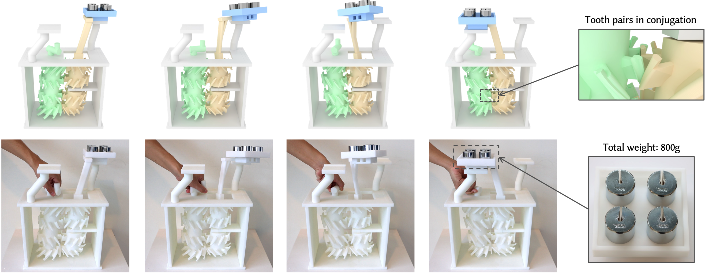
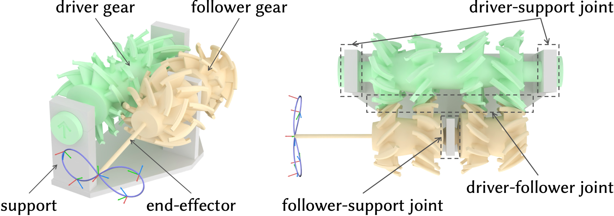
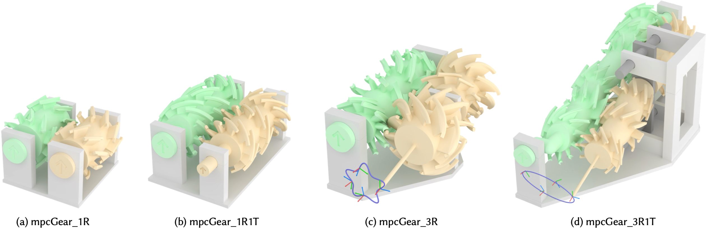
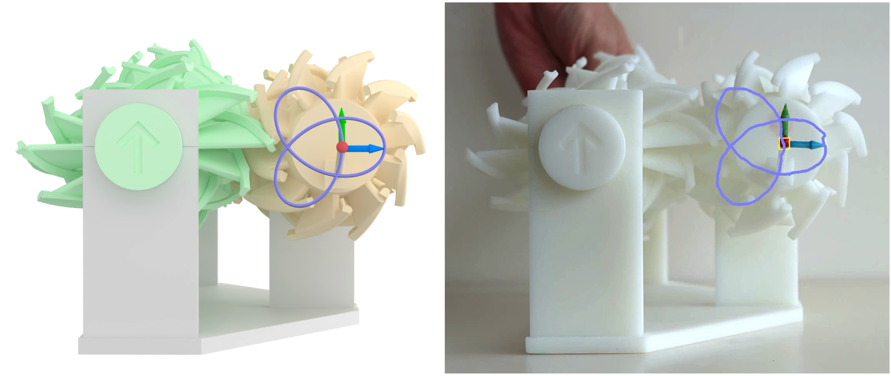
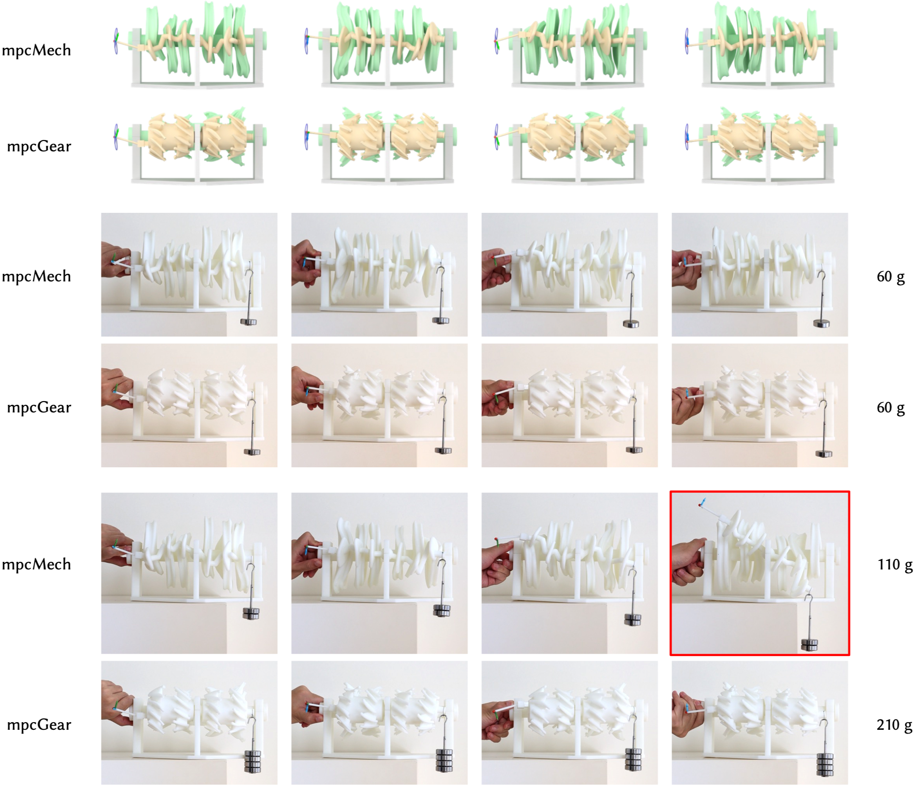
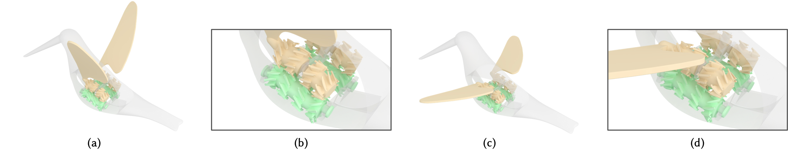

mpcGear: Multi-Point Conjugation Gear Mechanisms

Figure 1: We present a computational approach for modeling a new class of gear mechanisms called multi-point conjugation gear mechanisms that generate user-specified 3D motion under external loads. Using our approach, we model and fabricate a low-cost manipulator driven by a single actuator to perform a pick-and-place task while lifting a tray loaded with four 200g weights (totaling 800g).
Abstract
Gears transmit rotary motion via meshing teeth, with circular gears commonly used to produce constant-speed rotation and non-circular gears enabling variable-speed rotation. In order to generate complex motion, gears are typically combined with other mechanical parts such as linkages, cam-followers, and belts, which often leads to complex structures and reduced transmission efficiency. To address these limitations, recent research has been investigating non-conventional gears that can transfer complex motion while preserving key properties of gears, such as compactness, high transmission efficiency, and load-bearing capability.
In this paper, we present a new gear mechanism called the multi-point conjugation gear mechanism for exactly generating a user-specified 3D motion under external loads. The mechanism contains a single pair of gears modeled by a pair of conjugate surfaces with multiple conjugation points. We introduce an optimization-based approach that designs this new gear mechanism by modeling multiple sub-gear pairs that satisfy multi-point conjugation and fabricability requirements, whose load-bearing performance is quantified using a measure of dynamic form closure. We demonstrate the effectiveness of our approach by modeling various multi-point conjugation gear mechanisms that generate different kinds of motions, evaluating their kinematic performance and load-bearing performance using 3D printed prototypes, and presenting two application examples.
Download
Paper PDF(~18.7M)
Supplementary Material(~0.1M)
Video
Results

Figure 2: A multi-point conjugation gear mechanism (mpcGear_3R) consists of a driver gear, a follower gear, a support, and the joints connecting them. An end-effector is attached to the follower gear to visualize the user-specified motion. Here, the follower-support joint is a spherical joint.

Figure 3: Four classes of mpcGears that we have modeled, where the follower gear (yellow) can perform (a) 1-DOF rotation, (b) 1-DOF rotation and 1-DOF translation, (c) 3-DOF rotation, and (d) 3-DOF rotation and 1-DOF translation.

Figure 4: Evaluating the kinematic performance of a mpcGear_3R for generating a 3D motion, where the end-effector traces a Trefoil curve. (Left) Our modeled mpcGear_3R. (Right) The 3D printed prototype, where the generated trajectory is tracked in video frames and visualized in purple.

Figure 5: Comparison of load-bearing performance between mpcMech and mpcGear through a physical experiment. (Rows 1-2) Four key poses of mpcMech_3R and mpcGear_3R generating the same motion, where the leftmost column shows the first key pose. (Rows 3-4) mpcMech_3R and mpcGear_3R both carrying a 60g load. (Rows 5-6) mpcMech_3R carrying a 110g load and mpcGear_3R carrying a 210g load.

Figure 6: A flapping wing mechanism modeled using mpcGears to perform bird-like flapping motions. (a) and (c) show two key poses of the mechanism, while (b) and (d) provide corresponding close-up views highlighting the details of the mpcGears.
Acknowledgments
We thank the reviewers for their valuable comments. This work was supported by the Singapore MOE AcRF Tier 2 Grant (MOE-T2EP20222-0008), the Singapore MOE AcRF Tier 1 Grant (RG107/25), the Laoshan Laboratory (No. LSKJ202300305), and the National Natural Science Foundation of China (62025207).
Bibtex
@inproceedings {Chen-2026-mpcGear,
author = {Ke Chen and Joshua John Shi Kai Lee and Jianmin Zheng and Ligang Liu and Peng Song},
title = {mpcGear: Multi-Point Conjugation Gear Mechanisms},
booktitle = {ACM SIGGRAPH 2026 Conference Papers},
year = {2026}}